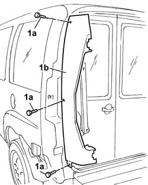

5540A43 tail light panel one left or right r r with interfering parts removed
- Path
- Procedures > 55 ELECTRICAL EQUIPMENT > 5540 EXTERIOR LIGHTING > 5540A lighting > 5540A43 tail light panel one left or right r r with interfering parts removed
- Kind
- repair procedure (removal / refitting; the operation number is the code)
- Applies to
- all engines; all production periods
- Interactive page
- https://sloeber94.github.io/elrnDB-fDbl/en/#/2584932
Applies to: all engines; all production periods
 Removing
Removing
 Refitting
Refitting1. Undo the bolts (1a) and remove the embellishment (1b).

Applies to: all engines; all production periods
Refitting
RemovingFit the embellishment and secure it with the screws.